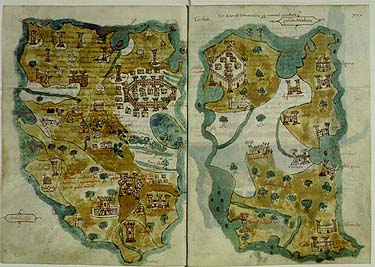

| Cristoforo
Buondelmonti: Liber insularum archipelagi - The Book of the Islands of the Archipelago |
|
|||
| Cristoforo Buondelmonti explored of the islands of the Aegean around 1415 and his work was a fusion of Geographical information and contemporary charts and sailing directions. When Antonio Pigafetta wrote his account of Magellan's Voyage around the World, he presented it as a work combining narrative and cartography. | |||
|  | |||
| In his view of Chios and Mytilene (Lesbos), Buondelmonti shows the site where he saw "the tomb of the bard Homer" (Chios) and where, as he knew, Sappho, Theophrastus, and other distinguished ancients had lived (Mytilene) | |||
| Maintained
by: Chris
Jennings
HOME Last Updated: |